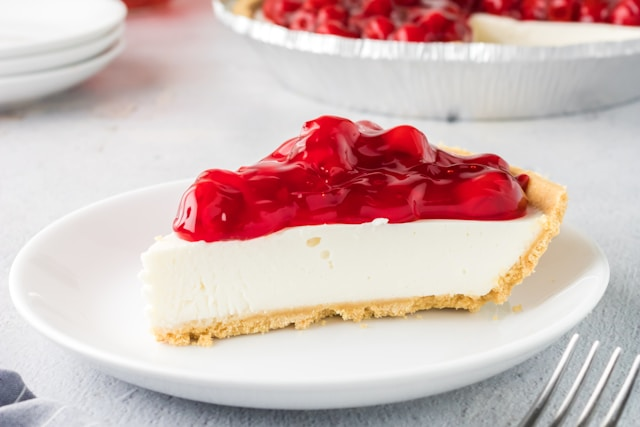

Vanilla Cheesecake with Pistachio
Crust

This recipe combines a classic vanilla cheesecake filling with a nutty pistachio crust for a delicious twist.
Ingredients:
For the Crust:
- 1 1/2 cups graham cracker crumbs
- 1/2 cup chopped pistachios
- 6 tablespoons melted butter
- 1/4 cup brown sugar
For the Cheesecake:
- 24 ounces cream cheese, softened
- 1 cup granulated sugar
- 4 large eggs
- 1 teaspoon vanilla extract
- 1/4 teaspoon salt
Instructions:
- Preheat oven to 350°F (175°C). Grease a springform pan.
- Make the crust: Combine graham cracker crumbs, pistachios, butter, and brown sugar in a bowl. Press mixture firmly into the bottom of the prepared pan. Bake for 10 minutes. Let cool completely.
- Make the filling: Beat cream cheese and sugar until smooth in a large bowl. Beat in eggs one at a time, then stir in vanilla and salt.
- Pour cheesecake filling over cooled crust. Bake for 50-60 minutes, or until the center is slightly set but still jiggles slightly.
- Let cheesecake cool completely in the oven with the door cracked open. Then refrigerate for at least 4 hours or overnight before serving.